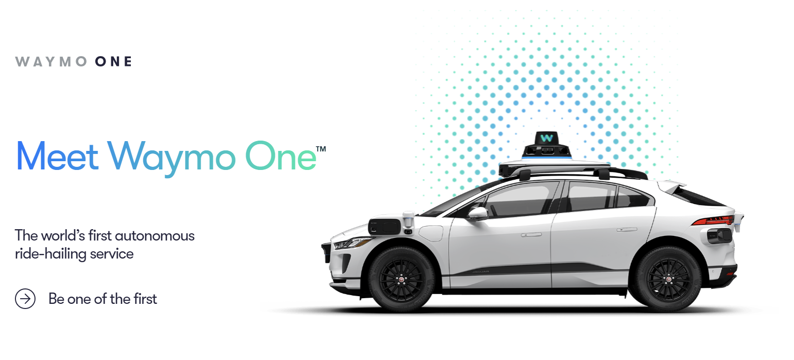
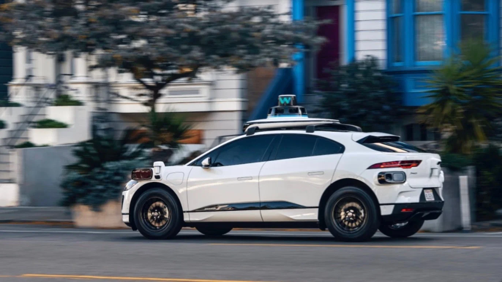
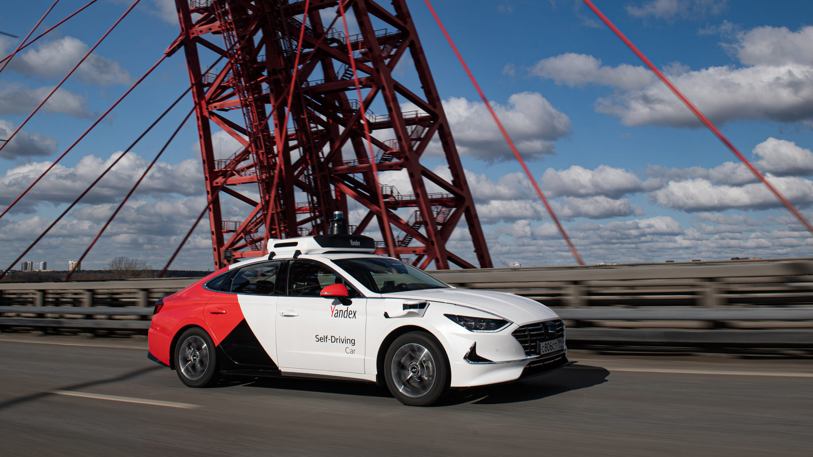
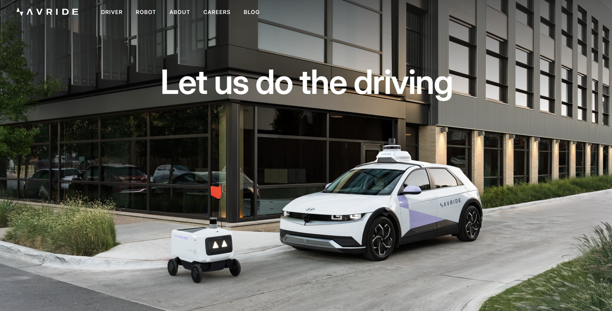

Waymo
Waymo, a subsidiary of Alphabet, specializes in the development and implementation of autonomous driving technologies. Formerly known as Google's self-driving car project, Waymo aims to make transportation safer, more accessible, and sustainable by eliminating the need for a human driver.
Waymo's Core Technologies
Waymo’s autonomous driving technology relies on several cutting-edge systems that work together to make safe, efficient, and reliable driving decisions. These technologies include:
- LiDAR (Light Detection and Ranging): Waymo uses four LiDAR to create detailed 360-degree maps of its surroundings, helping the vehicle detect obstacles even in low-light conditions.
- Radar: Six radar sensors provide longer-range object detection, helping the vehicle spot obstacles like other vehicles in poor visibility conditions.
- Cameras: 29 High-definition cameras allow the vehicle to see traffic signals, pedestrians, and other key elements in its environment.
- Artificial Intelligence & Machine Learning: AI algorithms process data in real time, enabling the vehicle to make driving decisions and adapt to its environment.
- High-Definition Maps: Waymo’s HD maps give the vehicle an accurate understanding of the road and help anticipate upcoming turns and intersections.
- Safety Protocols & Redundancy Systems: Built-in redundancy ensures that critical systems, like braking, have backups in case of failure, maintaining safety for passengers and others on the road.
- Sensor Fusion: Data from LiDAR, radar, cameras, and other sensors are combined to create a unified, accurate view of the environment, helping the vehicle make more reliable decisions.

Key Achievements and Initiatives
Advancement of Autonomous Driving Technology
Waymo is actively developing and refining its autonomous driving systems, integrating them into various vehicles, including Geely Zeekr electric cars. Recently, the company introduced its sixth-generation robotaxi, offering a more spacious and accessible service.
Expansion of Service Areas
By 2025, Waymo plans to expand its operations to over 10 new cities, including Las Vegas and San Diego. Testing of autonomous technologies will be conducted in various cities, including San Diego and Las Vegas.
Waymo One Service
Waymo offers the Waymo One autonomous ride-hailing service, available 24/7 in cities such as Phoenix, San Francisco, and Los Angeles. The service provides convenient, safe, and eco-friendly rides in fully electric vehicles.
Partnerships and Collaborations
Waymo collaborates with various automotive brands, such as Hyundai, to integrate its technologies into new electric vehicle models, including the Ioniq 5. Initial road tests of these vehicles are expected to begin by the end of 2025.

Yandex Self-Driving Group
Yandex Self-Driving Group (now Avride) was a division of Yandex focused on developing autonomous vehicle technologies in Russia. Here's an overview of their operations:

Yandex Self-Driving Group (Before Rebranding to Avride)
- Location: Initially operated mainly in Moscow and other cities in Russia.
- Focus: Yandex Self-Driving Group developed autonomous cars and delivery robots for urban environments, including ride-hailing services and last-mile delivery solutions.
- Technology: The autonomous vehicles used a combination of LiDAR, radar, and cameras for navigation and environmental mapping. Their cars were designed to operate with Level 4 autonomy, meaning the vehicle could drive itself within specific geofenced areas.
- Fleet: The fleet included modified versions of vehicles like the Toyota Prius, equipped with the necessary sensors and computing systems for self-driving. They also developed autonomous delivery robots, primarily used for food delivery services like Yandex.Eats.
Operations and Testing
- Testing: The self-driving cars underwent extensive testing on public roads in Russia, accumulating millions of miles. The tests included urban roads, highways, and a variety of weather conditions typical for Russia.
- Collaboration: The Yandex Self-Driving Group was closely involved in the Russian ride-hailing market, working with Yandex.Taxi to implement autonomous vehicles in its fleet.
V2X (Vehicle-to-Everything) – Communication with Infrastructure
Yandex autonomous vehicles may exchange data with other FSD-cars, traffic lights, and road infrastructure, enabling real-time traffic awareness.
-
V2I (Vehicle-to-Infrastructure):Communication with traffic lights and road sensors allows vehicles to anticipate signal changes and adapt speed accordingly.
-
V2P (Vehicle-to-Vehicle): Cars share information about speed, position, and potential hazards to prevent collisions and improve traffic flow.
-
V2N (Vehicle-to-Network): Connection to cloud-based traffic management systems for real-time updates on accidents, road conditions, and optimal routing.
However, with the geopolitical changes and the shift in operations due to the ongoing conflict, the Yandex Self-Driving Group rebranded and relocated its headquarters to Austin, Texas, becoming Avride. The team now operates outside Russia, though some developments and collaborations continue.
Avride
Avride, formerly known as Yandex Self-Driving Group, is a developer of autonomous vehicle technology and delivery robots. Originally part of Yandex, the company rebranded to Avride after relocating its headquarters to Austin, Texas. Here's an overview of Avride:

Company Overview
- Former Name: Yandex Self-Driving Group
- Location: Headquartered in Austin, Texas (formerly in Russia)
- Focus: Avride specializes in developing autonomous vehicles for urban environments, including both passenger transport and delivery solutions. The company has also expanded its operations to develop autonomous delivery robots.
Technology and Fleet
- Technology: Avride's autonomous vehicles use a combination of advanced sensors such as LiDAR, radar, and cameras for mapping the environment and enabling safe navigation. The vehicles are designed for Level 4 autonomy, meaning they can operate autonomously in specific areas but may still need human intervention in certain cases.
- Fleet: Avride's fleet consists of modified vehicles like the Toyota Prius, Hyundai IONIQ 5 outfitted with state-of-the-art sensors and computing systems. In addition, the company operates autonomous delivery robots, which are mainly used for last-mile delivery services, such as Uber Eats in collaboration with Uber.

Partnerships and Operations
- Uber Partnership: In October 2024, Avride entered into a partnership with Uber to provide autonomous vehicle rides and delivery services. Avride's six-wheeled sidewalk robots are now being used for Uber Eats deliveries, starting in Austin, Texas, with plans to expand to other cities. In 2025, Uber users in Dallas will be able to experience rides in Avride's autonomous vehicles.
- Testing and Development: Since its inception, Avride has driven millions of autonomous miles, demonstrating its commitment to developing reliable and safe self-driving technology. The company continues to test and improve its fleet of autonomous vehicles both in the U.S. and internationally.

Avride continues to innovate in the autonomous vehicle industry, focusing on passenger safety and improving urban mobility through self-driving technology and autonomous delivery solutions.
Tesla Full Self-Driving (FSD)
Tesla's Full Self-Driving (FSD) system is one of the most discussed advancements in the field of autonomous driving. While not at the same level as fully autonomous taxis, Tesla's FSD offers advanced features that significantly improve the driving experience. Here’s an overview of Tesla FSD and how it compares to fully autonomous ride-hailing services:
Overview of Tesla FSD
- Technology: Tesla's FSD system uses a combination of cameras, radar, ultrasonic sensors, and neural networks to provide semi-autonomous driving capabilities. It allows the vehicle to navigate complex urban environments, including city streets, highways, and intersections.
- Autonomy Level: Tesla's FSD is classified as a Level 3 (L3) autonomous system according to the SAE (Society of Automotive Engineers) standards. This means the vehicle can perform some driving tasks, such as steering, acceleration, and braking, but still requires active supervision by the driver. A human driver must be present and ready to take control at any time, as Tesla vehicles cannot operate fully autonomously.
Comparison to Autonomous Taxis
Unlike fully autonomous ride-hailing services, such as those provided by companies like Waymo or Avride, Tesla's FSD is not designed to operate without human intervention. While autonomous taxis (Level 4 or 5) are capable of fully driving themselves within specific geofenced areas or in all environments without any need for human oversight, Tesla's FSD still requires the driver to remain alert and ready to take control at any moment.

Tesla view of the world.
Key Features of Tesla FSD
- Autopilot: Tesla’s Autopilot system allows for hands-free driving on highways, with the car maintaining speed, lane position, and adjusting to traffic conditions.
- Navigate on Autopilot: This feature allows the car to automatically navigate highway interchanges, exit ramps, and merge with traffic.
- Summon: Tesla FSD includes the ability to "summon" the car from a parking space or garage, although this is limited to close distances and requires the driver to remain nearby.
- Autonomous Parking: Tesla vehicles with FSD can park themselves in both parallel and perpendicular parking spaces.
- Traffic Light and Stop Sign Recognition: The system can detect traffic lights and stop signs, automatically stopping the car when necessary.
Challenges and Limitations
- Driver Supervision: Despite its advanced features, Tesla FSD still requires constant driver attention. It is not designed for full autonomy and cannot drive the vehicle without a human being ready to intervene at any time.
- Geographic Limitations: Tesla FSD operates best in areas with clear road markings and well-defined lane structures. It can struggle in poor weather conditions or areas with inadequate infrastructure.
Future of Tesla FSD
Tesla is continuously improving its Full Self-Driving system with over-the-air software updates, adding new features and expanding the system's capabilities. However, Tesla FSD is still far from achieving the full autonomy seen in Level 4 or 5 systems used by autonomous ride-hailing services, like those deployed by companies such as Waymo or Avride.